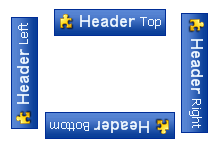
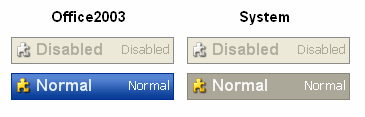
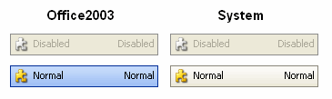

KryptonHeader
Use the KryptonHeader control to create a heading that provides a description for a section of your form. For example, you can place a header at the top of an area of related controls and provide a name and description that indicates the purpose of the related controls. The content of the control is contained in the Values property. You can define Heading, Description and Image details within the Values property.
Appearance
The HeaderStyle property is used to define the top level styling required for the appearance of the KryptonHeader control. The default value of Primary gives a bold header style that should be appropriate for use as a section header. Alternatively use the Secondary setting for less prominent text. See figures 2 and 3 for examples of the visual difference. The Form style is used for the caption area by the KryptonForm control. There are also custom styles that can be defined via a KryptonPalette for situations where you need to create variations on the styles already provided. Custom styles are named simply Custom1 and Custom2.
You can use the Orientation property to rotate the control. The default setting of Top shows the content in a left to right and top to bottom arrangement. Specify Bottom to have the control displayed upside down, Left to show the content rotated 90 degrees left and Right for 90 degrees rotated right. See figure 1 for examples.

Figure 1 – Orientation Property
Two States
Only two possible states of Disabled and Normal are used by the header control. In order to customize the appearance use the corresponding StateDisabled and StateNormal properties. Each of these properties allows you to modify the background, border and content characteristics.
To speed up the customization process an extra StateCommon property has been provided. The settings from this are used if no override has been defined for the state specific entry. Note that the specific state values always take precedence and so if you define the text font in StateNormal and StateCommon then the StateNormal value will be used whenever the control is in the Normal state. Only if the StateNormal value is not overridden will it look in StateCommon.
ButtonSpecs
You can add buttons to the header by modifying the ButtonSpecs collection exposed by the KryptonHeader. Each ButtonSpec entry in the collection describes a single button for display on the header. You can use the ButtonSpec to control all aspects of the displayed button including visibility, edge, image, text and more. At design time use the collection editor for the ButtonSpecs property in order to modify the collection and modify individual ButtonSpec instances. See the ButtonSpec section for more details. Figure 2 shows an example of a KryptonHeader with buttons.
Figure 2 – KryptonHeader with ButtonSpecs
AllowButtonSpecTooltips
By default the control will not show any tool tips when you hover the mouse over the user defined button specifications. If you set this boolean property to True then it will turn on tool tips for those button specs. Use the ButtonSpec.TooltipText property in order to define the string you would like to appear inside the displayed tool tip.
AllowButtonSpecTooltipPriority
If the parent Item has tooltips, and the button spec has tooltips, then
the default is show both when hovering over the buttonspec. This can be disabled
by setting AllowButtonSpecTooltipPriority to true, so that only 1 tooltip is
displayed when hovering over any part of the control.
UseMnemonic
When this property is defined as True for the KryptonHeader it will check each of the ButtonSpec instances in the ButtonSpecs collection. If the Text or ExtraText in a ButtonSpec matches the incoming mnemonic then the Click event for the ButtonSpec will be fired.
Examples of Appearance
Figure 3 shows the KryptonHeader in the Normal and Disabled states for the HeaderStyle of Primary. The left column shows examples using the Professional - Office 2003 palette mode and the right column the Professional - System palette mode. Figure 4 shows the same except where the HeaderStyle has been changed to Secondary.

Figure 3 – HeaderStyle = Primary

Figure 4 – HeaderStyle = Secondary